| Score de eficiencia técnica relativa, promedio 2017–2021 | ||||
|---|---|---|---|---|
| Departamento | Score eficiencia | PIB agrop. (BOB MM) | Gasto (BOB MM) | Ratio PIB/Gasto |
| SANTA CRUZ | 1.000 | 11026 | 32.2 | 378 |
| BENI | 0.487 | 1438 | 9.0 | 163 |
| COCHABAMBA | 0.279 | 5242 | 81.9 | 85 |
| PANDO | 0.214 | 817 | 10.9 | 77 |
| LA PAZ | 0.133 | 3770 | 94.1 | 53 |
| ORURO | 0.083 | 468 | 19.2 | 27 |
| CHUQUISACA | 0.082 | 1232 | 57.9 | 27 |
| POTOSÍ | 0.077 | 938 | 40.9 | 25 |
| TARIJA | 0.050 | 1144 | 73.5 | 17 |
| Score: ratio PIB/gasto normalizado por máximo anual. 1.0 = depto frontera. | ||||
Eficiencia y equidad del gasto
DEA, regresiones panel e incidencia subnacional
Este capítulo evalúa si el gasto agropecuario boliviano es eficiente y equitativo. Combina análisis envolvente de datos a nivel departamental, regresiones panel de productividad y análisis de incidencia con la Encuesta de Hogares.
Apoyo al productor — PSE Bolivia en contexto LAC
Composición de los apoyos
Antes de comparar Bolivia con LAC, es útil examinar la composición interna de los apoyos al productor — la metodología OECD distingue entre Producer Support Estimate (PSE) que captura transferencias directas (precios, pagos, reducción de insumos), General Services Support Estimate (GSSE) que cubre bienes públicos al sector (I+D, sanidad, infraestructura), y Consumer Support Estimate (CSE) que mide transferencias hacia consumidores.
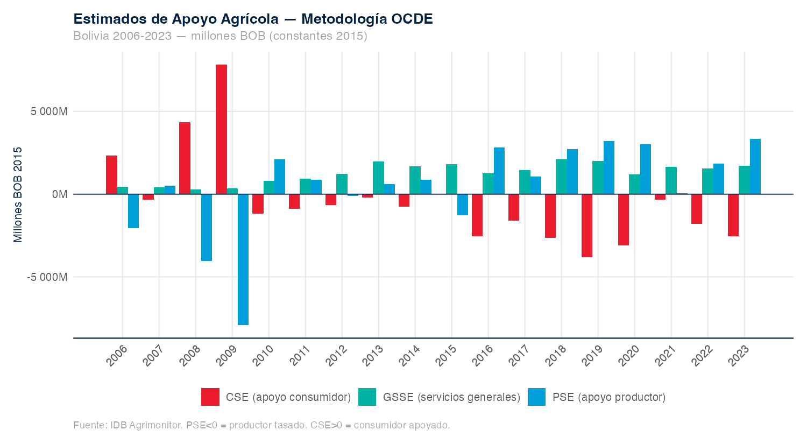
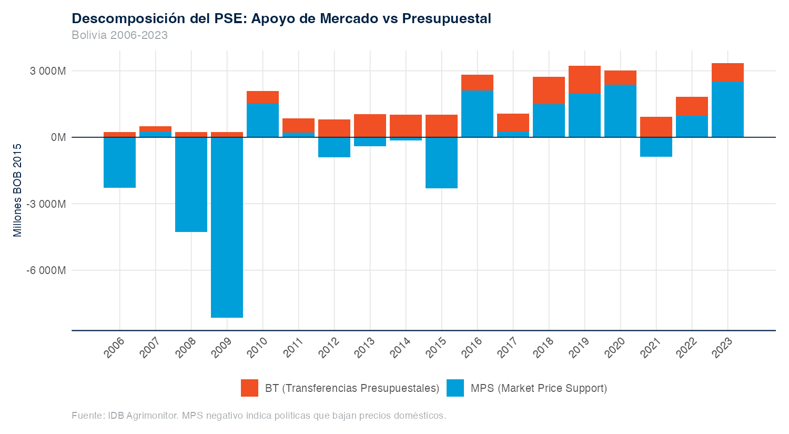
Bolivia frente a LAC
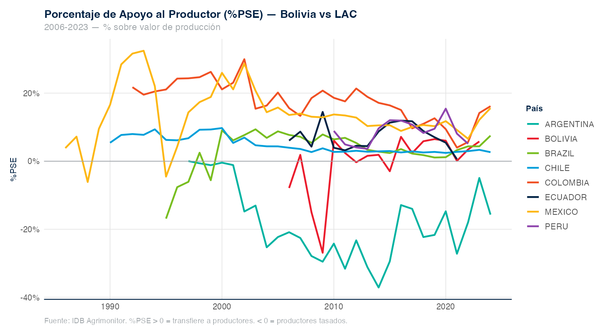
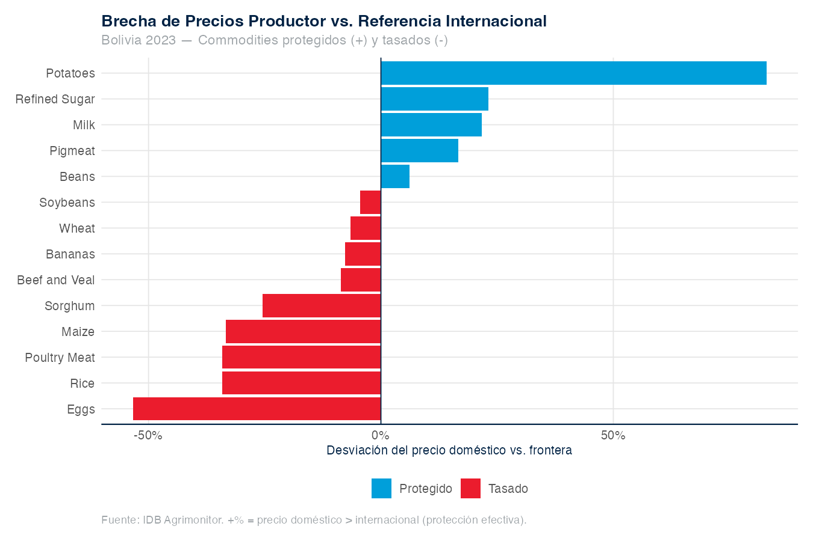
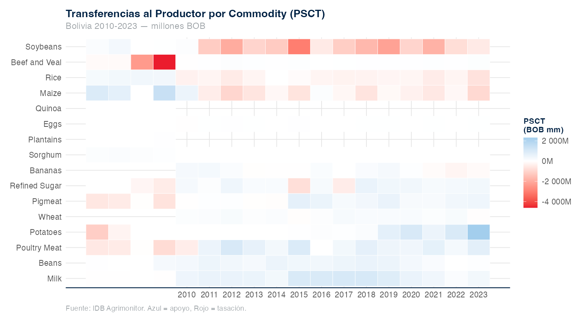
Patrón dual de protección
Bolivia exhibe un patrón dual de apoyo al productor que persiste en el tiempo:
- Taxa exportables (transferencia implícita del productor al consumidor): soya −37 %, arroz −33 %, sorgo −47 %.
- Protege seguridad alimentaria: maíz +46 %, trigo +28 %, cebada +65 %.
- PSE total Bolivia 2023: 5.8 % — quinto en LAC tras México (6.6 %), Colombia (5.6 %), Perú (5.1 %), Brasil (4.4 %).
Este patrón es coherente con la política explícita de soberanía alimentaria post-2009 y los controles de precios sobre exportables.
Eficiencia técnica departamental — DEA
Setup metodológico
El análisis envolvente de datos (DEA) compara cada unidad territorial (DMU) con la mejor combinación factible de inputs y outputs observada en la muestra. Para Bolivia, la unidad de análisis son los 9 departamentos × 9 años (81 DMUs) entre 2012 y 2020.
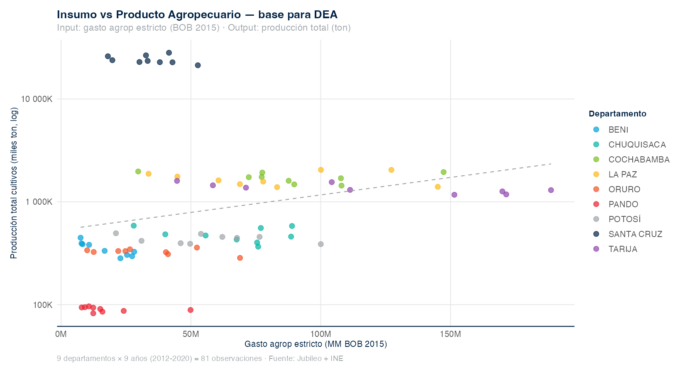
Resultados por departamento
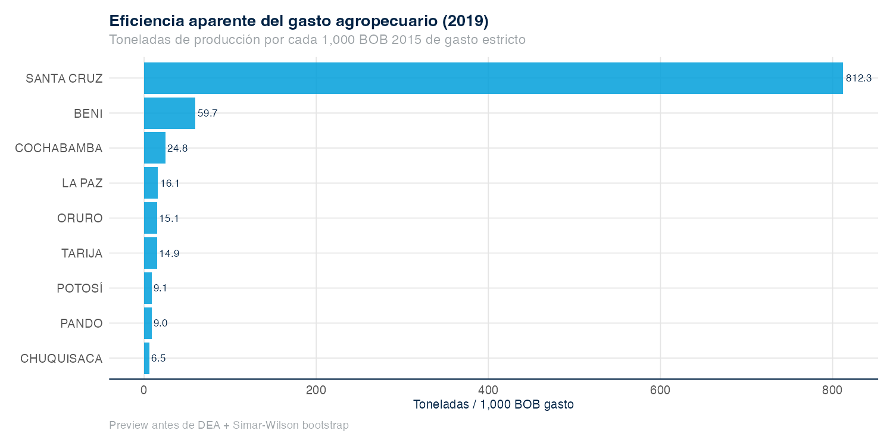
Santa Cruz domina como frontera de eficiencia con score 1.0 (ratio PIB/gasto ~378), seguido por Beni (0.49) y Cochabamba (0.28). Tarija aparece como el menos eficiente (0.05) — gran gasto, bajo PIB agropecuario relativo.
Determinante principal de la eficiencia
La regresión de segunda etapa muestra que la expansión de uso antrópico del suelo (MapBiomas) explica el 63 % de la varianza en los scores de eficiencia departamental.
score ~ ln(área antrópica)
β = 0.230 (SE 0.028, p<0.001)
R² ajustado = 0.632 (n=40)Es decir, los departamentos con frontera agrícola activa son los que aparecen como “más eficientes” en términos de PIB agropecuario por boliviano gastado. Esta lectura matiza el resultado: la eficiencia observada está vinculada a la expansión territorial, no necesariamente a mejor gestión del gasto.
Regresiones de productividad — panel nacional
| Determinantes de la TFP agrícola, Bolivia 1990–2023 | |||||
|---|---|---|---|---|---|
| Modelo | Coef. Inv (β1) | Coef. LC antrópica | Coef. PSE% | R² ajustado | N obs |
| M1: TFP ~ Inv | 0.089 | NA | NA | 0.621 | 34 |
| M2: TFP ~ Inv + LC + tendencia | -0.006 | -0.277 | NA | 0.783 | 34 |
| M3: M2 + PSE | 0.073 | 0.095 | -0.0038 | 0.620 | 18 |
| Estimación: feols(). Variables en log. Panel maestro v12. | |||||
Interpretación de las regresiones
- La elasticidad TFP-inversión es positiva pero modesta: ~0.09 en el modelo baseline. Es decir, doblar la inversión agropecuaria se asocia con un aumento de TFP de ~9 %.
- La expansión de uso antrópico muestra un coeficiente positivo y significativo: la frontera agrícola eleva la productividad agregada (mecanismo de ampliación de escala), no la productividad por hectárea.
- El PSE% es significativo y negativo (β = −0.004, p<0.05): el apoyo de precios distorsiona la asignación de recursos y se asocia con menor TFP — un resultado consistente con la literatura OCDE.
Equidad — distribución del gasto entre municipios
Distribución y concentración
Antes de medir la incidencia rural del gasto agropecuario sobre la pobreza, conviene examinar cómo se distribuye el gasto entre municipios. La distribución es muy asimétrica: pocos municipios reciben grandes volúmenes y la mayoría queda con asignaciones modestas.
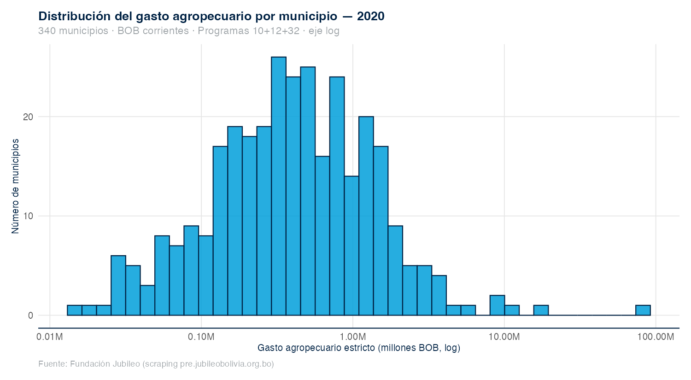
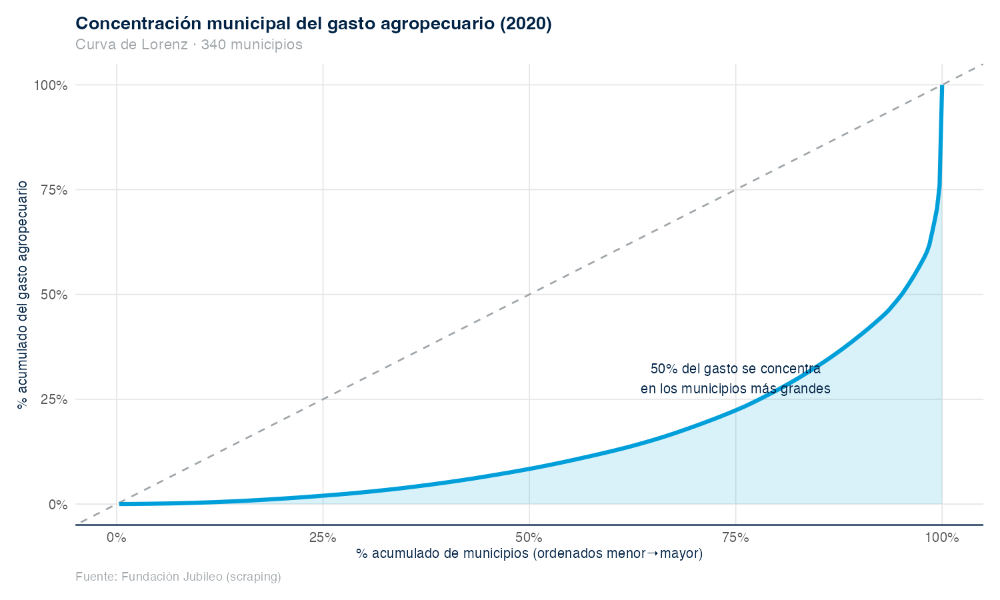
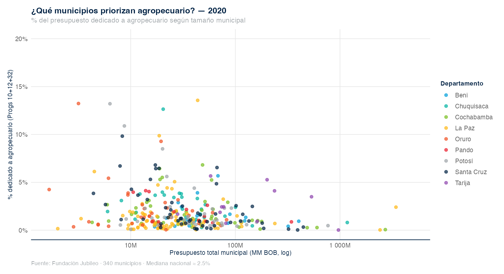
Concentración del gasto entre municipios
La curva de Lorenz revela una concentración extrema: un grupo pequeño de municipios concentra una fracción desproporcionada del gasto agropecuario, mientras que la mayoría de municipios pequeños queda con montos absolutos modestos. Cruzando con la incidencia rural de pobreza (siguiente sección), la asimetría territorial del gasto se vuelve políticamente relevante.
Equidad — incidencia rural
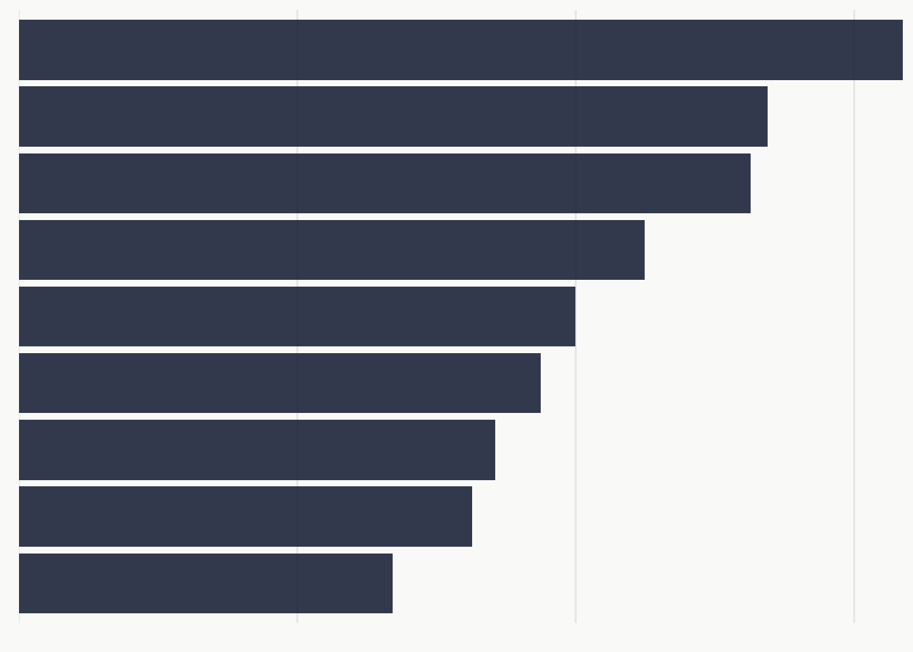
Asimetría territorial
Los departamentos andinos —Chuquisaca, Oruro y Potosí— concentran las mayores tasas de pobreza rural (54–64 %), mientras Pando, Tarija y Beni muestran tasas de 27–34 %.
Cruzando esta información con la distribución del gasto público agropecuario, se observa que las regiones más pobres no reciben proporcionalmente más recursos. La paradoja es nítida: Santa Cruz concentra el mayor gasto agropecuario absoluto, mientras los departamentos más pobres reciben el más alto per cápita pero en montos absolutos pequeños que no permiten programas de transformación productiva de escala.
Síntesis
| Dimensión | Hallazgo | Implicación |
|---|---|---|
| PSE Bolivia 2023 | 5.8 % — 5° en LAC | Apoyo moderado-bajo en contexto regional |
| Patrón dual | Taxa soya/arroz, protege maíz/trigo | Política explícita de soberanía alimentaria |
| DEA depts | Santa Cruz frontera (1.0); Tarija mínimo (0.05) | Heterogeneidad enorme |
| 2ª etapa DEA | LC antrópica explica 63 % varianza | Eficiencia ligada a expansión territorial |
| TFP-Inv | Elasticidad ~0.09 (significativa) | Retornos positivos pero modestos |
| PSE-TFP | Coef negativo (−0.004**) | Apoyo de precios distorsiona productividad |
| Incidencia | Chuquisaca/Oruro/Potosí 54–64 % pobreza | Asimetría territorial del gasto |
Los retornos del gasto agropecuario son positivos pero modestos, muy heterogéneos por territorio, y vinculados más a expansión de frontera que a mejoras de productividad por hectárea. Estos hallazgos motivan las recomendaciones de reorientación del próximo capítulo del reporte técnico.